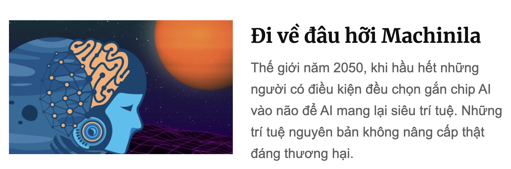

Đi về đâu hỡi Machinila

Lời tòa soạn: Giáo sư Phan Dương Hiệu, nhà mật mã học đã sáng tác một truyện khoa học viễn tưởng về một thế giới tương lai nơi con người chọn "nâng cấp" bằng kết nối với máy, bằng gắn chip, và cũng dễ bị các nhà độc tài dữ liệu thao túng. Tương lai ấy có lẽ là viễn tưởng, nhưng cũng có những mầm mống đầu tiên xuất hiện, từ Neuralink - con chip sơ khai đầu tiên cắm vào não người để chữa bệnh, hay những chip AI nối với mô thần kinh.
Một cậu chàng thông minh học say mê, cậu nhất quyết sống một cuộc đời thực của con người, nên khi bạn bè bắt đầu lắp những cái chip nhỏ đầu tiên vào đầu thì cậu ta từ chối, nhất nhất quan điểm: một khi đã máy hóa một chút sẽ bị phụ thuộc dần mà máy hóa toàn bộ thôi, không cưỡng được.
Ấy vậy mà rồi những đứa bạn lười học của cậu ta khi đi xin việc phỏng vấn thì qua hết, câu hỏi nào cũng giải ngon, nhiệm vụ nào cũng hoàn thành, bởi lẽ đã cài SaM-chip giải hộ (hay còn gọi là Sunim - Mus chip, dù trên truyền thông các anh đả kích nhau rất hăng, nhưng phía sau lại phối hợp phát triển AI và chip cực mạnh có thể cấy vào con người). Còn cậu chàng thông minh dù giỏi giang, nhưng sao mà đọ được với AI trên phổ rộng. Thậm chí, trước những người phỏng vấn đánh giá (thực ra cũng đã bị robot hóa) thì cậu ta trở thành kẻ ngốc nghếch đáng thương.
Cậu chỉ xin được việc trong một phòng nghiên cứu về mật mã, nơi cuộc phỏng vấn được đặt ở chế độ bảo mật cao nhất, và do đó, mọi thí sinh đều bị cắt mọi tín hiệu thông tin với bên ngoài. (Để đạt được siêu trí tuệ nhờ cắm SaM-chip, mọi người đều cần kết nối với SaM-máy chủ, do đặc điểm của các hệ AI phức tạp là thường phải phân tích dữ liệu ở quy mô rất lớn, trong khi từng con chip siêu nhỏ tách biệt chỉ có khả năng lưu trữ và xử lý dữ liệu hạn chế). Chỉ khi đó, cậu chàng mới tỏ rõ sự thông minh và hiểu biết của mình. Giáo sư +- nhận cậu làm học trò cưng. Và cậu tên là Pita.
Nhưng thế giới tương lai là thế giới được kết nối mọi lúc mọi nơi, chất lượng kết nối được các nhà mạng đảm bảo 100% với tốc độ cao, người người gắn chip siêu mỏng - một tiểu phẫu đã trở nên hết sức đơn giản, chỉ 15 phút. Lúc đầu, nhiều người tự chọn gắn chip do thích thú thấy mình thông tuệ lên, nhưng sau đó nó trở thành nhu cầu cấp thiết, không lắp chip thì chỉ có thất nghiệp, vì mọi khả năng đều kém hơn so với những đứa lắp chip.
Dần theo thời gian, giáo sư +- và các học trò của ông dường như chỉ có thể sống trong thế giới riêng của họ - Privicia. Họ vẫn cảm thấy hạnh phúc như đang sống ở những năm 2000, dù không sung túc, hiện đại như những người gắn chip đã tạo ra thế giới Machinila trù phú của năm 2050. Ở chiều ngược lại, những người ở Machinila thì coi Privicia thật là ngu ngốc: đọc sách học hành chi cho lắm, như chúng tôi đây, mọi thứ đều biết, mọi thông tin riêng gửi cho SaM-máy chủ hết và mọi quyết định tối ưu đã có SaM-chip lo, khỏi cần bận tâm.
Tất nhiên vẫn có những giao tiếp giữa Privicia và Machinila. Mila là một cô gái dễ thương trong thế giới Machinila, chính vậy mà nàng cũng quý và chơi với Pita. Tuy Pita không thể thông tuệ bằng nàng, nhưng đôi khi Pita cũng có những ý tưởng bất ngờ làm nàng phải cập nhật cho SaM-máy chủ. Hay nói đúng hơn, chủ soái SaM vẫn cần phải lập trình cho các tín đồ của mình chơi với Privicia để tiếp tục cập nhật mọi bí ẩn (có lẽ là vô hạn) của con người cho hoàn thiện hệ thống AI của Machilina. Tất nhiên sẽ có lúc nếu AI quyết định đã học hết thì rất có thể Privicia cứng đầu là một trở ngại và phải lựa chọn: hoặc cài chip hoặc chấm hết. Nhưng giờ còn chưa phải khi đó.
Một ngày nọ, trong khi đang giảng giải một cách đầy thông tuệ cho chàng Pita những chỗ chàng chưa hiểu từ bài giảng của giáo sư +-, nàng Mila của Machinila mắt đang sáng long lanh bỗng lờ đờ, đầu lắc lắc. Pita lo lắng hỏi, nàng Mila lắp bắp: Đợi mình chút, từ hôm qua chủ soái Sam đặt chế độ quảng cáo 15 phút mỗi ngày, trong 15 phút này mình sẽ chẳng có gì để nói với bạn.
Do ngượng ngùng về sự ngu dốt trong 15 phút đó với Pita mà Mila về nhà đòi bố mẹ mua cho gói thuê bao đặc biệt để không còn bị quảng cáo ngắt quãng. Và cả ngày hôm sau đó, nàng lại thông tuệ nói về mọi chủ đề mà Pita đã tự luyện cùng thầy +-.
Nhưng rồi mô hình của SaM ngày càng lớn nên chủ soái - dù khởi điểm là một người thực tâm phát triển AI với đầy đủ những suy nghĩ về đạo đức - buộc phải tăng giá thuê bao. Nhiều gia đình không kham nổi thì thời lượng quảng cáo lại càng phải tăng dần lên. Bản miễn phí cứ 1h lại ngắt 10 phút, hay nói đúng hơn sống 1h thông tuệ thì lại có 10 phút ngu như bò.
Tình hình ngày càng trở nên khó khăn khi năng lượng để chạy cho thế giới Machinila - ngày càng đông - trở nên đắt đỏ. Một số nguyên lão của Machinila bắt đầu phản ứng và có nguy cơ lập thành một đội quân để biểu tình. Đứng trước nguy cơ đó, không có cách nào khác, chủ soái SaM phải thay đổi mã thuật toán để cho những người này "ngu đi", yêu quý mình hơn và nhụt ý chí biểu tình. Một công đôi việc, tìm câu trả lời thông minh tối ưu nhất mới khó, chứ tìm cách ngu đi thì khó gì, còn đỡ tốn năng lượng.
Dần dần, SaM cũng cảm thấy thích thú vì cứ ai định phản đối mình thì chỉ cần cho trợ lý Robot thay đổi chút mã trong SaM-chip là người đó trở nên yêu mến mình. Dễ quá nhỉ, SaM dần được yêu hơn và cũng mê muội trong sự yêu mến đó. Dần dần, Machinila trở nên một thế giới tôn sùng SaM khiến SaM ngày càng kiêu căng hơn, và chẳng mấy chốc trở thành một nhà độc tài, coi Machinila là lãnh địa của riêng mình. Để chống mọi mầm mống của sự bất tôn sùng, cuối cùng các SaM-chip được lập trình để mọi con chiên đều trở nên dễ bảo.
Tất cả quá trình đó không qua khỏi mắt của những người trong thế giới Privicia. Với trình độ bảo mật cao, họ đã cắt đứt khỏi những sóng của SaM để củng cố một lãnh địa khác, và giờ đây họ thực sự lo lắng cho những con chiên ngu ngốc của thế giới Machinila. Pita, với trái tim nóng bỏng, đã đem lòng yêu mến nhớ nhung Mila, dù cho nàng giờ đây ngơ ngơ, có gặp khéo cũng còn chẳng nhớ chàng là ai. Pita quyết cứu nàng khỏi sự mê muội. Và Pita trở thành một hacker.
Pita đã theo dõi những bước đi của Mila và rồi một lần khi Mila dạo phố, chàng đã ngắt mọi tín hiệu xung quanh Mila, chàng đã hack thành công và truy nhập vào được hệ thống của nàng và vô hiệu hóa nó. Sau một phút bần thần, bản năng con người trong Mila dần sống dậy và nàng nắm chặt lấy tay của Pita, nói rằng đã rất lâu rồi bàn tay nàng mới được run lên thế này, mắt của nàng mới có giọt lệ rơi, và tai của nàng mới nghe được tiếng gió rít.
Mila khẩn cầu Pita hãy cứu nàng, hãy cho nàng được sống thật con người dù có phải nghèo khổ, nàng sẽ cố học lại và sẽ không quá ngu để có thể hiểu chàng. Nhưng Mila khi tỉnh hơn thì cũng tình hơn, nàng nghĩ đến bố mẹ và những người thân, những người khác trong thế giới Machinila và cầu khẩn Pita hãy cứu họ, họ đang ngu dần mà không biết điều đó.
Pita cuối cùng đã tìm ra một lỗ hổng, anh kích hoạt lại SaM-chip trong Mila, nhưng lợi dụng kênh nối đó với SaM-máy chủ mà đã phát ra được một loại broadcast-virus xâm nhập vào hệ thống SaM-máy chủ và broadcast (quảng bá) toàn bộ thuật toán vận hành của soái SaM cho mọi thành viên của Machinila để tất cả họ hiểu rằng đấng cứu thế mà lâu nay họ tôn sùng hóa ra là một kẻ độc tài dùng thuật toán ngu dân cai trị. Mã của Pita đồng thời làm tê liệt hệ điều hành của soái SaM và cũng cho mỗi thành viên của Machinila quyền lựa chọn: vô hiệu hóa, từ bỏ chip hoặc tiếp tục. Một cách hiển nhiên, đại đa số đã hiểu ra điều đơn giản để lựa chọn từ bỏ vĩnh viễn cuộc đời ảo vọng với cái chip trong đầu, cùng mọi lời hứa hão về một thiên đường lừa dối!